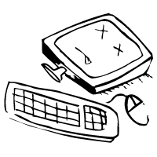

Web diensten
Nieuwe website bouwen Nieuwe website ontwerpen Responsive website (mobile) SEO optimalisatie
Modules op uw website
Website zelf beheren (CMS)
SEO optimalisatie
Modules op uw website
Website zelf beheren (CMS)
ICT Diensten
Gegevensherstel (Data Recovery)  PC Herinstallatie WiFi Installeren Drivers in orde maken Uw computer versnellen Computer schoonmaak Een draadloze printer installeren
Uw TV en Decoder instellen
Een draadloze printer installeren
Uw TV en Decoder instellen
 Uw TV op internet aansluiten
Home Cinema installeren
Overige hulp
Uw TV op internet aansluiten
Home Cinema installeren
Overige hulp